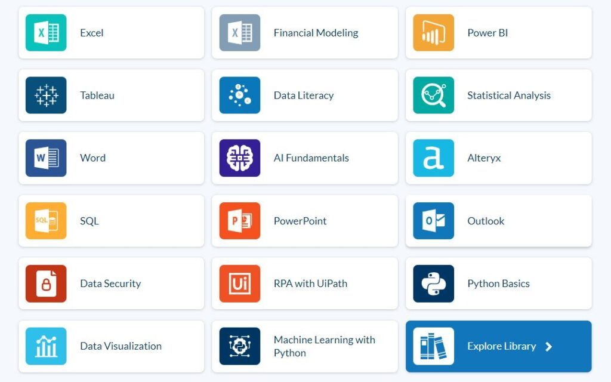

The Future Tools and Technologies in Consulting
The age-old technical weapons of choice in Management Consulting still prevail. Excel, Outlook and PowerPoint are where most consultants spend their time. In fact, a first or second year consultant will often spend up to 5 hours a day in Excel alone, amounting to over 50% of their working day being spent in a single desktop application.
With the rise of no/low code technologies however, Management Consultants are beginning to enhance their tooling stack, adopting other technologies like advanced BI and workflow automation tools, AI, ML, and RPA – among many others. The motivation being: to reduce the time spent on low value administrative tasks, and divert more attention to other value-add client services.
There’s a growthing challenge within the firm however. As the advancement of these technologies continues, the knowledge gap between ‘where’ and ‘when’ to apply these new tools is growing.
To stay competitive, firms must commit to not only invest in the fundamentals – but also the future of consultancy work.
Here we look at some of the common technologies gradually making their way into the mainstream Consulting landscape.

BI Tools and Big Data
Popular Choices: Looker, Tableau, Microsoft Power BI, Qlik, SAS, and Domo
As big data becomes more available, the need to be able to clean, process and present it becomes increasingly important. Tools like Power BI, Tableau and Qlik allow these tasks to be completed in a relatively accessible way.
According to research conducted by Sheffield Haworth, for consultants advising on investments in big data and on the management, interpretation and usage of data is likely to be more important by 2030 than the sourcing of data. Possession of data is no longer a competitive advantage, but the skills needed to exploit the data are.
Machine Learning & Artificial Intelligence
Popular Choices: Python, Alteryx
Consultants are required to create, combine, clean, analyze and interpret data regularly. Sometimes the ETL (extract, transform and load) process alone can consume up to 50% of a client engagement.
Tools like Alteryx carry the capability of automating these workflows and inferring rules from data (ML), meaning processes only need to be configured once to manage what used to be cumbersome repeated tasks.
Sheffield Haworths Future of Consulting paper outlines that some consultants believe that the disruption of AI won’t be felt in the industry until 2040. However, one thing is agreed:
“If AI is doing the “grunt” work, acquiring information and knowledge far more rapidly than humans and potentially seeing some patterns that humans might miss, then the consensus is that the value of consultants will be to frame the questions for AI to answer. AI tells you “what”, the consultant helps tell you “how”.
Future of Consulting
Robotics & Robotic Process Automation (RPA)
Popular Choices: UiPath, Power Automate
In a recent webinar with UiPath and EY titled A Robot for Every Person, it was noted that EY was utilising UiPath on over 120,000 desktops within its organisation. Seven out of twelve of the recent UiPath awards for RPA capabilities (Partner of the Year) went to Consulting companies. Deloitte, EY, PwC, Capgemini, and Tacstone were all among the group of award recipients.
Smaller boutique firms should keep an eye on these leading movements to ensure the RPA skill gap doesn’t cause competitive losses.
Advanced Spreadsheets
Popular Choices: Airtable, AppSheet, MS Power Apps
Spreadsheets certainly aren’t dead. Quite the opposite. In fact, the investment community is quite active within the Spreadsheet enhancement space, a secondary market, with companies like AirTable receiving over 600M USD in private funding. Google even recently made the move to acquire AppSheets, a no-code app that allows users to create mobile, tablet, and web applications using data sources like Google Drive, DropBox, Office 365, and other cloud-based spreadsheet and database platforms.
How are these tools being integrated into the Consulting landscape? The overwhelming number of job postings which now list Power Apps skills in the sector goes to show there is destined to be a “App gap” amongst those who are yet to understand the skill.
Consider how G&J Pepsi demonstrated how the democratization of app development skills within the enterprise can lead to game changing innovation with Microsoft Power Apps. Pepsi used the Power Apps technology to quickly deploy digital applications which supported inventory management and merchandising. As Accenture points out in their 2021 Technology Trends whitepaper, in one case, employees with little to no software development experience created an app that would examine a picture of a shelf to identify the number and type of bottles on it, then automatically order the correct items for restocking based on historic trends. The group created eight applications without a professional developer on staff and saved $500,000 in the first year alone.
Blockchain and Crypto
Thanks to the popularity of Cryptocurrency, Blockchain has been identified as a technology with a never ending suite of applications. Many of the leading Consulting firms are continuing to build their competencies in this area by investing heavily in designated business units designed to specifically deal with the growing market opportunities enabled by the new technology.
In a research paper produced by BCG titled Blockchain in the Factory of the Future, several use cases are presented in the niche area of manufacturing alone. Some of these include; enhancing track and track within the supply chain, protecting and monetizing critical intellectual property, simplifying and safeguarding quality checks, advancing machines as a service, and enabling machine controlled maintenance. If one sector alone can present so many interesting cases for Blockchian, emagine what impact the technology could carry across them all.